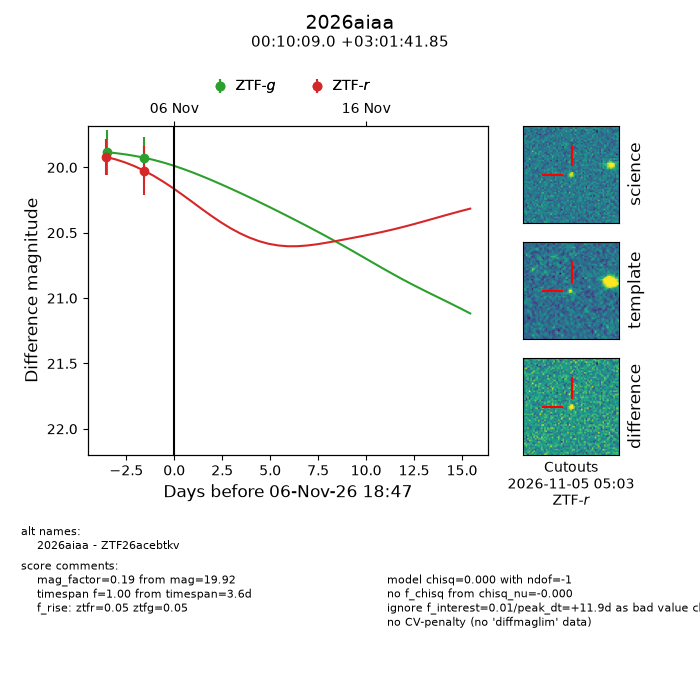
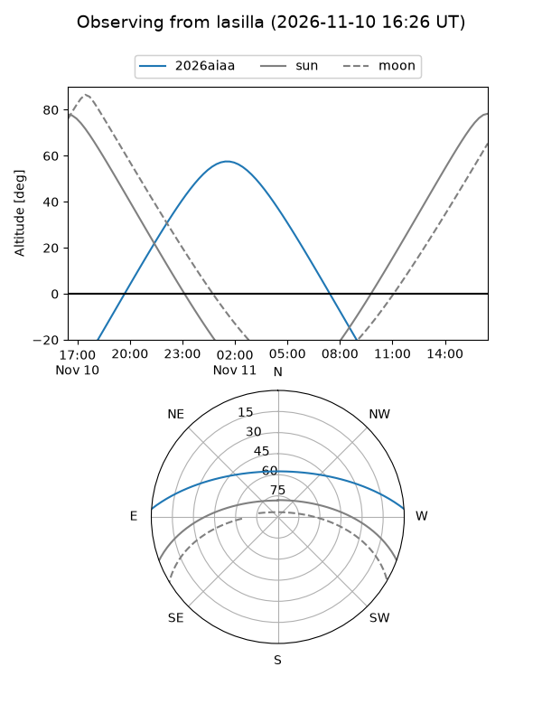
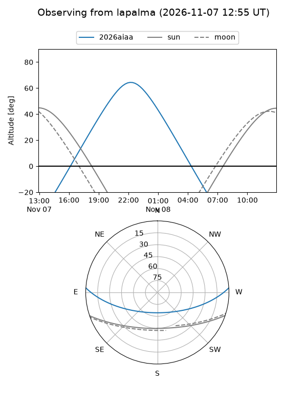
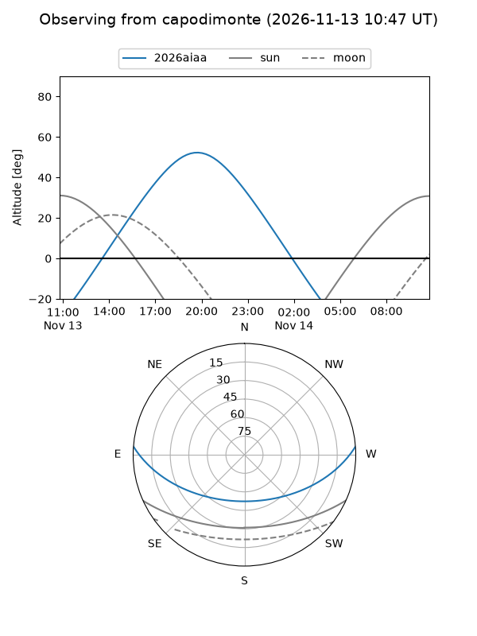
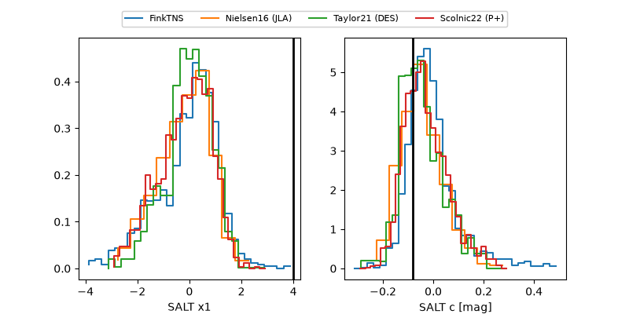

2026aiaa
Target 2026aiaa at 2026-11-06 18:49
Aliases and brokers:
FINK-ZTF: ztf.fink-portal.org/ZTF26acebtkv
Lasair-ZTF: lasair-ztf.lsst.ac.uk/objects/ZTF26acebtkv
ALeRCE-ZTF: alerce.online/object/ZTF26acebtkv
YSE-PZ: ziggy.ucolick.org/yse/transient_detail/2026aiaa
TNS name: wis-tns.org/object/2026aiaa
Direct TNS query: direct search
alt names
ZTF26acebtkv (ztf,fink_ztf)
2026aiaa (tns,yse)
Coordinates:
equatorial (ra, dec) = 2.5374,+3.02829
equatorial (HMS+DMS) = 00:10:08.98,+03:01:41.85
galactic (l, b) = (103.0580,-58.24134)
Flags:
peak dt: +11.9
Photometry:
last ztfg=19.92, ztfr=20.02
2 ztfg, 2 ztfr detections
Lightcurve

Visibility



Additional plots
